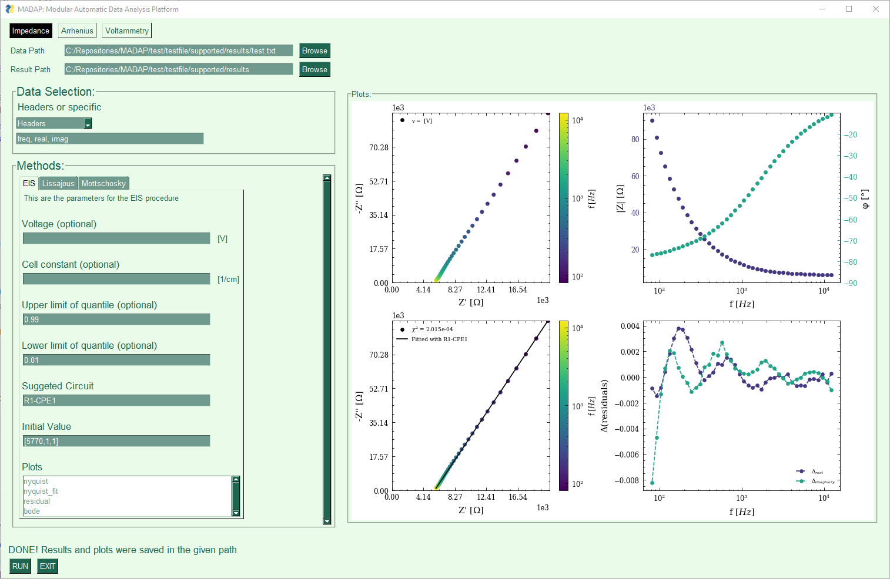
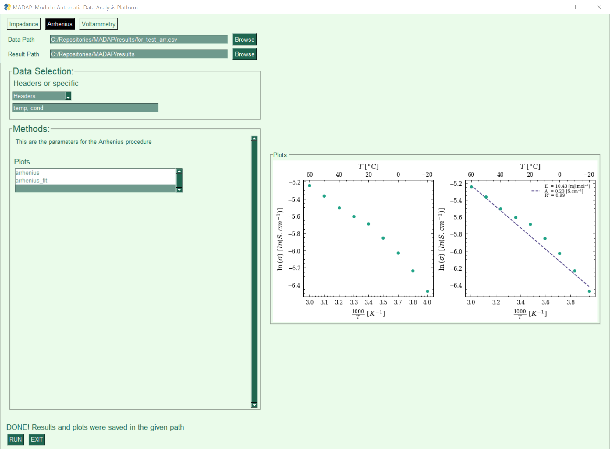

Usage
MADAP as a python package
The most simple usage of MADAP for Arrhenius and Impedance analysis is as follows:
from madap.echem.arrhenius import arrhenius
from madap.echem.e_impedance import e_impedance
from madap.data_acquisition import data_acquisition as da
# Load the data
data = da.acquire_data('data.csv')
# Define the desired plots for Arrhenius analysis
plots_arr = ["arrhenius", "arrhenius_fit"]
# Define the desired plots for impedance analysis
plots_eis = ["nyquist", "nyquist_fit", "bode", "residual"]
# Define a save location#
save_dir = "/results"
### Arrhenius
# Instantiate the Arrhenius class for analysis (column names do not have to match exactly, this is just an example)
Arr = arrhenius.Arrhenius(da.format_data(data["temperature"], da.format_data(data["conductivity"])))
# Perform analysis and plotting
Arr.perform_all_actions(save_dir, plots = plots_arr)
### Impedance
# Initialize the Impedance class for analysis (column names do not have to match exactly, this is just an example)
Im = e_impedance.EImpedance(da.format_data(data["freq"]), da.format_data(data["real"]), da.format_data(data["img"]))
# Initialis the EIS procedure. The initial value is the initial guess for the equivalent circuit (can also be left empty)
Eis = e_impedance.EIS(Im, suggested_circuit = "R0-p(R1,CPE1)",initial_value =[860, 3e+5, 1e-09, 0.90])
# Analyze the data
Eis.perform_all_actions(save_dir, plots = plots_eis)
# More usages and options can be found in the documentation.
There are more options i.e. for impedance class, outlier detection can be used with respective quantile parameters. Furthermore, different plot settings and circuit options can be used as well. For more information, please refer to the documentation. It is possible to expand MADAP with custom analysis procedures. The implementation steps are as follows:
Create a new class in the respective folder (echem) and inherit from the base class (procedure.py).
from madap.procedure import EChemProcedure
from madap.logger import Logger
class MyProcedure(EChemProcedure):
def __init__(self, data, **kwargs):
super().__init__(data, **kwargs)
Implement the abstract methods (see documentation for more information).
def analyze(self):
# Perform analysis
pass
def plot(self, save_dir, **kwargs):
# Plot results
pass
def save_data(self, save_dir):
# Save results
pass
def perform_all_actions(self, save_dir, **kwargs):
# Perform all actions
pass
Create a new class in the respective folder (echem) for the plotting and inherit from the base class (plotting.py).
from madap.plotting.plotting import Plots
from madap.logger import Logger
class MyPlotting(Plots):
def __init__(self, data, **kwargs):
super().__init__(data, **kwargs)
MADAP as a command line tool
MADAP can also be used via command line:
madap_cli --file <path_to_file> --procedure <procedure> --results <path_to_results> --header_list <header_list> --plot <list_of_plots>
Note that when using the argument “impedance” for the option –procedure, another option –impedance_procedure is necessary to be specified. At the moment, the only possible impedance procedure is “EIS”. Mottschotcky and Lissajous are not yet implemented.
The possible EIS arguments include:
--plots<list_of_plots> (e.g: [“nyquist”, “nyquist_fit”, “bode”, “residual”])--voltage<voltage> (e.g: 0.1)--cell_constant<cell_constant> (e.g: 0.5)--suggested_circuits<suggested_circuits> (e.g: “R0-p(R1,CPE1)”). This can be left empty. Madap will attempt to find the best circuit accordingly.--initial_values<initial_values> (e.g: [860, 3e+5, 1e-09, 0.90]). This can be left empty. Madap will attempt to find the best initial value accordingly.
MADAP as a GUI
MADAP can also be used via a GUI:
madap_gui
An example of the GUI for impedance is shown below:
{kind=link}
An example of the GUI for Arrhenius is shown below:
{kind=link}